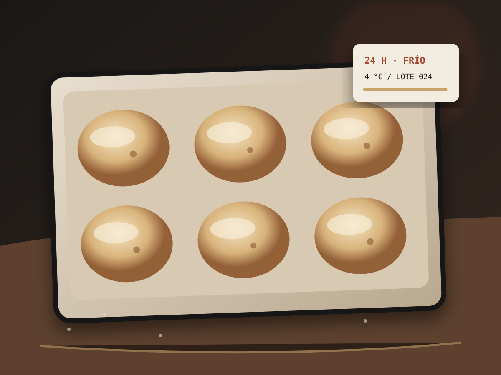
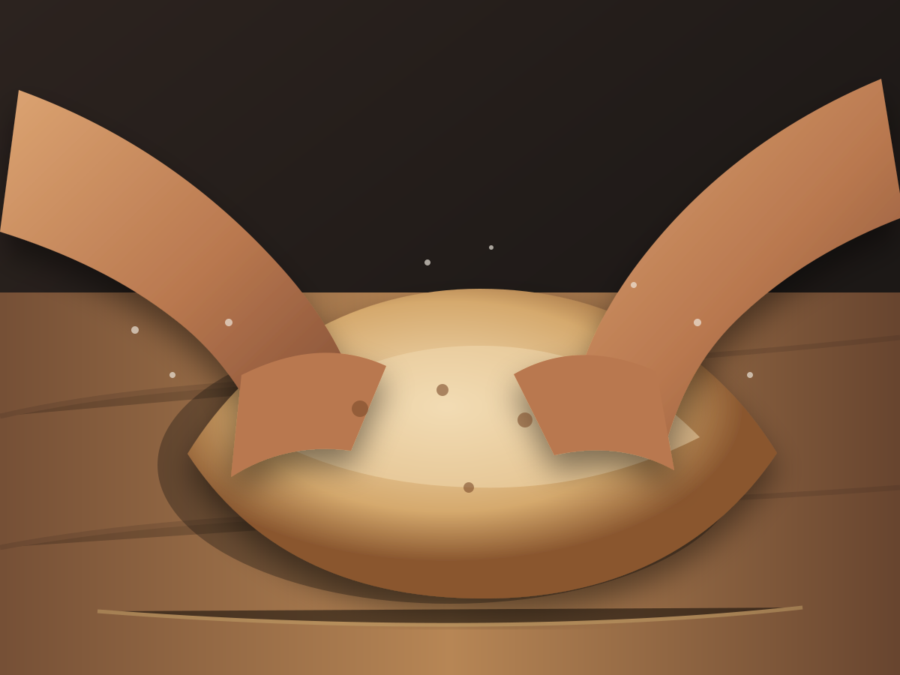

Métodos El Errante
Recetas para observar, no solo obedecer.
Cantidades, cronogramas, señales visuales, errores frecuentes y ajustes según tiempo, equipo y experiencia.
Biblioteca de recetas
Elige tiempo, equipo y experiencia.
Cómo leer una receta
El resultado no cabe en un cronómetro.
Las cantidades orientan; las señales de la masa confirman cuándo avanzar.
Ingredientes
Cantidades organizadas por rendimiento, hidratación y formato.
Cronograma
El tiempo se presenta como una secuencia de decisiones.
Señales
Volumen, textura, tensión, temperatura y color ayudan a leer el proceso.
Correcciones
Cada método explica errores frecuentes y cómo ajustar la siguiente prueba.
Aire y Tiempo
La receta empieza antes de mezclar.
Temperatura ambiente, equipo, horario y experiencia determinan qué método tiene sentido para ti.
